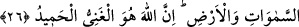

ALLAH
KALBLERDE OLANI
ÇOK İYİ BİLİR
20. Allâh’ın, göklerde ve yerdeki (nice varlık ve imkânları) sizin emrinize
verdiğini, nîmetlerini açık ve gizli olarak size bolca ihsan ettiğini görmediniz mi?
Yine de, insanlar içinde, -bilgisi, rehberi ve aydınlatıcı bir kitabı yokken- Allah
hakkında tartışan kimseler vardır.
21. Onlara “Allâh’ın indirdiğine uyun” dendiğinde: Hayır, biz babalarımızı
üzerinde bulduğumuz yola uyarız, derler. Ya şeytan, onları alevli ateşin azabına
çağırıyor idiyse!
22. İyi davranışlar içinde kendini bütünüyle Allâh’a veren kimse, gerçekten en
sağlam kulpa yapışmıştır. Zaten bütün işlerin sonu Allâh’a varır.
23. (Rasûlüm!) İnkâr edenin inkârı seni üzmesin. Onların dönüşü ancak bizedir.
İşte o zaman yaptıklarını kendilerine haber veririz. Allah kalplerde olanı şüphesiz
çok iyi bilir.
24. Onları biraz faydalandırır, sonra kendilerini ağır bir azaba sürükleriz.
25. Andolsun ki onlara, “Gökleri ve yeri kim yarattı?” diye sorsan, mutlaka
“Allah...” derler. De ki: (Öyleyse) övgü de yalnız Allâh’a mahsustur, ama onların
çoğu bilmezler.
26. Göklerde ve yerde ne varsa, hepsi Allâh’ındır. Şüphesiz ki Allah, asıl ganî ve